Pratiche consolariTrámites consulares
Presentiamo e ritiriamo per te le pratiche al Consolato cubano di Roma.Presentamos y recogemos por ti los trámites en el Consulado cubano de Roma.
Documenti necessariDocumentos necesariosAssociazione culturale Italia–Cuba, dal 2010Asociación cultural Italia–Cuba, desde 2010
Passaporti, visti, inviti per la famiglia, traduzioni e legalizzazioni. Ti diciamo quali documenti servono e portiamo noi la pratica al Consolato di Cuba. Pasaportes, visados, invitaciones para tu familia, traducciones y legalizaciones. Te decimos qué documentos necesitas y llevamos nosotros el trámite al Consulado de Cuba.
Dal 2010 aiutiamo cubani e italiani a sbrigare le pratiche tra i due Paesi, con un ufficio a Roma e il consolato itinerante a Napoli.Desde 2010 ayudamos a cubanos e italianos con los trámites entre los dos países, con una oficina en Roma y el consulado itinerante en Nápoles.
Mundo Cubano è un'associazione culturale, sportiva e ricreativa senza scopo di lucro. Ci occupiamo del rilascio, della legalizzazione e della traduzione dei documenti, delle spedizioni via aerea e marittima e dei viaggi a Cuba. I servizi sono riservati ai soci.Mundo Cubano es una asociación cultural, deportiva y recreativa sin fines de lucro. Nos ocupamos de la expedición, legalización y traducción de documentos, de los envíos por vía aérea y marítima y de los viajes a Cuba. Los servicios están reservados a los asociados.
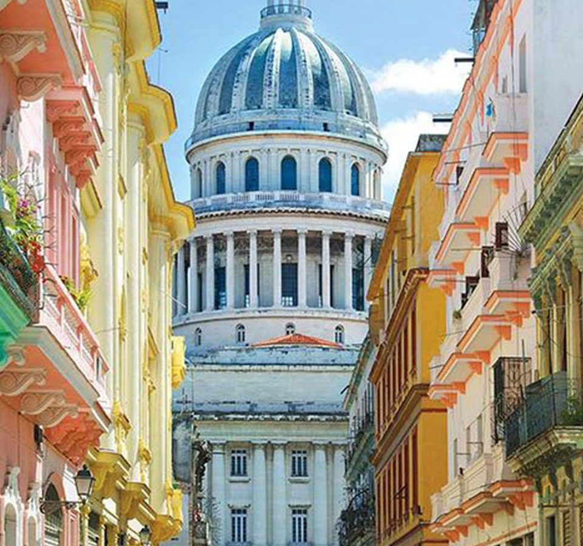
Seguiamo la tua pratica dall'inizio alla fine, al Consolato di Cuba, in Prefettura e in Comune.Seguimos tu trámite de principio a fin, en el Consulado de Cuba, en la Prefettura y en el Comune.
Presentiamo e ritiriamo per te le pratiche al Consolato cubano di Roma.Presentamos y recogemos por ti los trámites en el Consulado cubano de Roma.
Documenti necessariDocumentos necesarios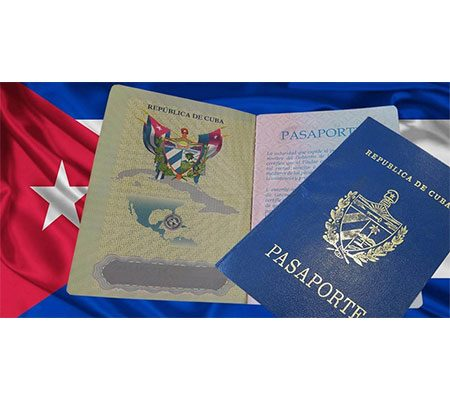
Proroga, rinnovo e documento di viaggio (DVT) se il passaporto è scaduto o perso.Prórroga, renovación y documento de viaje (DVT) si el pasaporte está vencido o perdido.
Documenti necessariDocumentos necesarios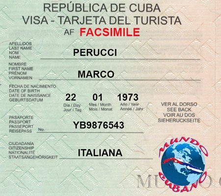
Il visto per Cuba pronto in pochi minuti, con la polizza sanitaria obbligatoria.La visa para Cuba lista en pocos minutos, con el seguro médico obligatorio.
Documenti necessariDocumentos necesarios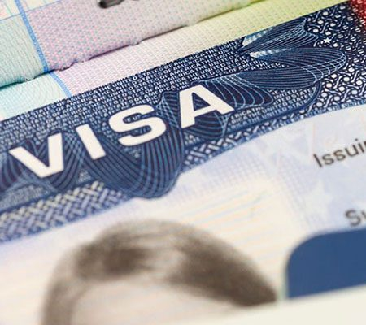
Prepariamo l'invito per la tua famiglia e la pratica del visto, senza errori.Preparamos la invitación para tu familia y el expediente del visado, sin errores.
Come funzionaCómo funciona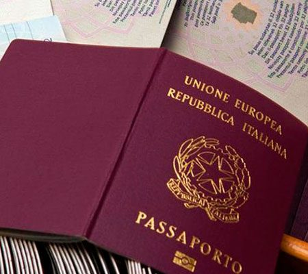
Cittadinanza italiana, esame B1, residenza all'estero (PRE) e matrimonio.Ciudadanía italiana, examen B1, residencia en el exterior (PRE) y matrimonio.
Documenti necessariDocumentos necesariosCertificati tradotti e legalizzati, validi in Italia e a Cuba.Certificados traducidos y legalizados, válidos en Italia y en Cuba.
Documenti necessariDocumentos necesariosUna volta al mese il Consolato di Cuba viene a Napoli. Fai la tua pratica vicino a casa, senza venire a Roma.Una vez al mes el Consulado de Cuba viene a Nápoles. Haz tu trámite cerca de casa, sin viajar a Roma.
I posti sono limitati: scrivici per sapere la prossima data e prenotare.Las plazas son limitadas: escríbenos para saber la próxima fecha y reservar.
Chiedi la prossima dataPregunta la próxima fechaApri una pratica per vedere i documenti da preparare. Se non sei sicuro, scrivici: ti diciamo noi da dove partire.Abre un trámite para ver qué documentos preparar. Si no estás seguro, escríbenos: te decimos por dónde empezar.
Nessuna pratica trovata. Scrivici su WhatsApp e ti rispondiamo noi.No encontramos ese trámite. Escríbenos por WhatsApp y te respondemos.
Ci occupiamo noi di presentare e ritirare le pratiche presso il Consolato cubano a Roma, così non devi fare file né viaggi.
Presentamos y recogemos por ti los trámites en el Consulado cubano en Roma: sin colas y sin viajes.
Chiedi informazioniPide informaciónIl DVT ti permette di entrare a Cuba anche se il passaporto non è valido. Va firmato davanti al funzionario consolare e serve un biglietto aereo con la data di partenza. Viene rilasciato in circa 10 giorni.
El DVT te permite entrar en Cuba aunque tu pasaporte no esté vigente. Se firma ante el funcionario consular y necesitas un boleto aéreo con fecha de salida. Se emite en unos 10 días.
Legalizziamo i certificati presso il Consolato cubano a Roma e possiamo richiedere i tuoi certificati a Cuba tramite la Consultoría Jurídica.
Legalizamos tus certificados en el Consulado cubano en Roma y podemos pedir tus certificaciones en Cuba a través de la Consultoría Jurídica.
Chiedi informazioniPide informaciónTraduciamo certificati e documenti tra spagnolo e italiano, pronti per Comune, Prefettura, Questura e Consolato.
Traducimos certificados y documentos entre español e italiano, listos para Comune, Prefettura, Questura y Consulado.
Chiedi un preventivoPide un presupuestoSi può chiedere per matrimonio (o unione) con un cittadino straniero, per chi ha figli stranieri, per i figli minori e per i genitori over 60 di chi ha già la residenza all'estero.
Se puede pedir por matrimonio (o unión) con un ciudadano extranjero, por tener hijos extranjeros, para hijos menores y para padres mayores de 60 años de quien ya tiene la residencia en el exterior.
Quando il Consolato rilascia il nulla osta, te lo spediamo per raccomandata. Poi va legalizzato in Prefettura e consegnato al Comune.
Cuando el Consulado emite el documento, te lo enviamos por correo certificado. Luego se legaliza en la Prefettura y se entrega al Comune.
Chiedi informazioniPide informaciónLegalizziamo noi i certificati al Consolato di Cuba. Il cittadino cubano prepara il certificato di nascita e lo stato libero (o la sentenza di divorzio).
Nosotros legalizamos los certificados en el Consulado de Cuba. El ciudadano cubano prepara su certificado de nacimiento y la soltería (o la sentencia de divorcio).
Chiedi informazioniPide informaciónTi aiutiamo a preparare la domanda e a ottenere i certificati cubani tradotti e legalizzati. Con noi puoi anche iscriverti all'esame di italiano B1.
Te ayudamos a preparar la solicitud y a conseguir tus certificados cubanos traducidos y legalizados. Con nosotros también puedes inscribirte al examen de italiano B1.
Verifica i requisitiRevisa los requisitosTi spieghiamo quali documenti servono, controlliamo tutto e ti seguiamo fino alla fine. Meglio cominciare con anticipo, soprattutto prima di Natale e dell'estate.
Te explicamos qué documentos necesitas, revisamos todo y te acompañamos hasta el final. Mejor empezar con tiempo, sobre todo antes de Navidad y del verano.
Come funzionaCómo funcionaAnche i minori hanno bisogno del visto. Puoi richiederlo per un amico o un familiare senza delega: bastano le copie dei suoi documenti.
Los menores también necesitan visa. Puedes pedirla para un amigo o familiar sin autorización: bastan las copias de sus documentos.
Polizza sanitaria AMI Assistance, valida in tutto il mondo. Va fatta prima della partenza e può coprire anche solo l'andata.
Póliza médica AMI Assistance, válida en todo el mundo. Se compra antes de salir y puede cubrir solo la ida.
Chiedi il prezzoPregunta el precioÈ più semplice di quanto pensi. Inizia con qualche settimana di anticipo, soprattutto per le feste.Es más fácil de lo que piensas. Empieza con algunas semanas de tiempo, sobre todo para las fiestas.
Raccontaci il tuo caso per telefono o messaggio. Ti ascoltiamo e ti orientiamo.Cuéntanos tu caso por teléfono o mensaje. Te escuchamos y te orientamos.
Ti diciamo esattamente cosa serve per il tuo invito, senza complicazioni.Te indicamos qué necesitas para tu invitación, sin complicaciones.
Ti guidiamo in ogni passaggio, fino a quando la pratica è conclusa.Te guiamos en cada paso del trámite hasta el final.
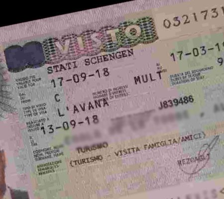
Per Natale, inizia adessoPara Navidad, empieza yaPacchetti turistici, tour organizzati e case in affitto per il tuo soggiorno sull'isola.Paquetes turísticos, tours organizados y casas en alquiler para tu estancia en la isla.
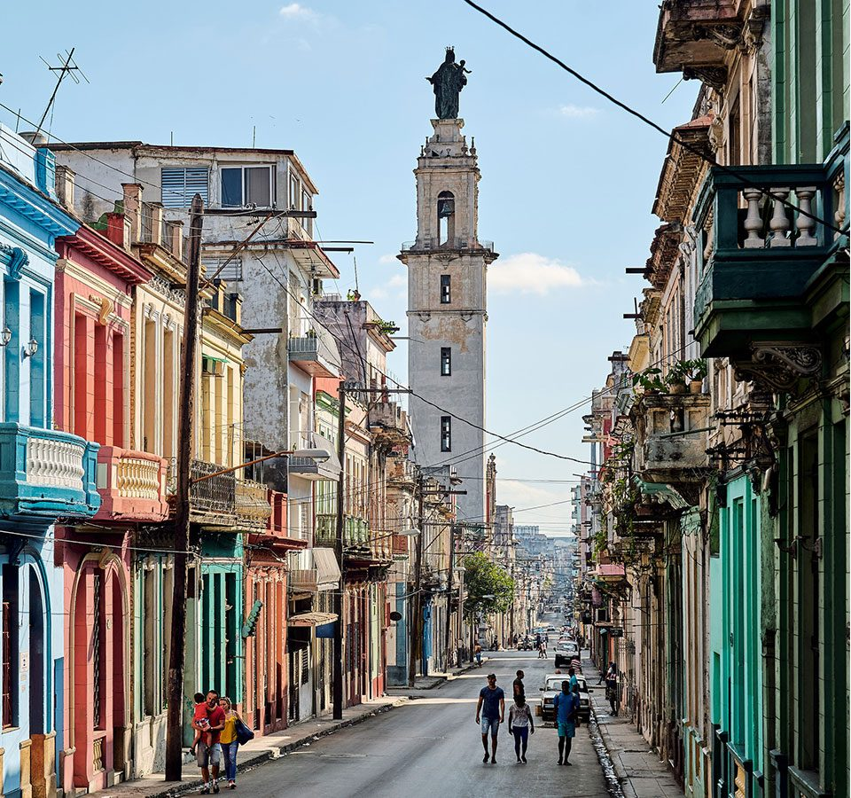
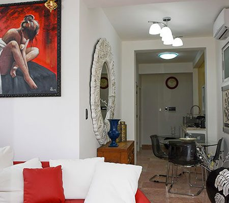
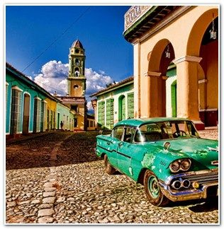
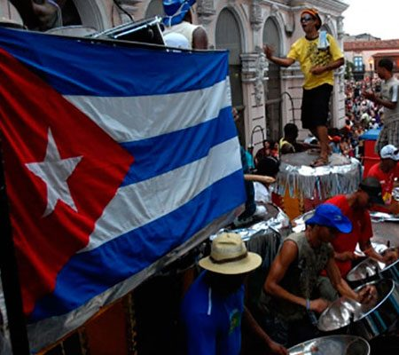
Dicci date e budget: ti prepariamo una proposta.Dinos fechas y presupuesto: te preparamos una propuesta.
Chiedi una propostaPide una propuesta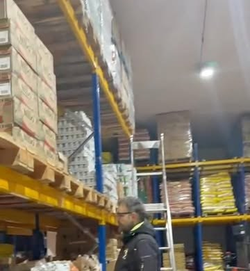
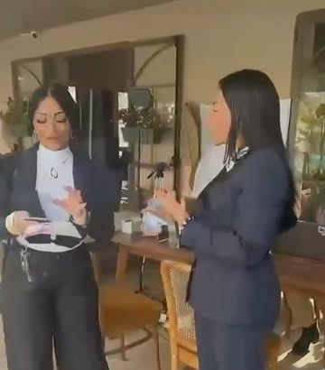
Manda a Cuba quello che vuoi, anche in grandi quantità. Lavoriamo con magazzini all'ingrosso per pacchi alimentari, prodotti per la casa e regali.Envía a Cuba todo lo que quieras, incluso en grandes cantidades. Trabajamos con almacenes mayoristas para paquetes de comida, productos para el hogar y regalos.
Da anni organizziamo feste, tornei di baseball e incontri per la comunità cubana in Italia e a Cuba.Desde hace años organizamos fiestas, torneos de béisbol y encuentros para la comunidad cubana en Italia y en Cuba.
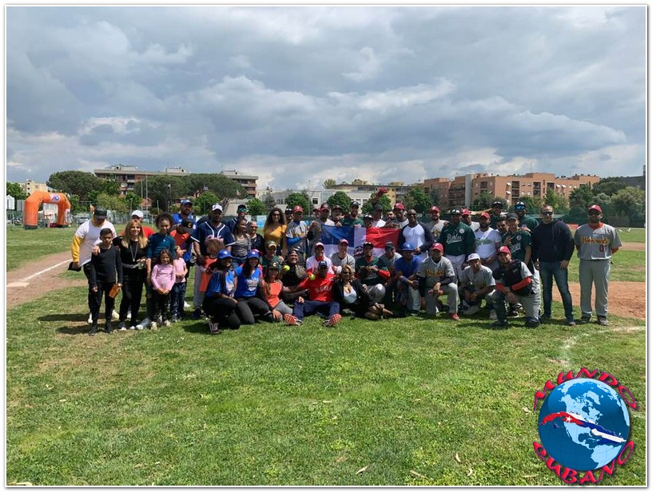
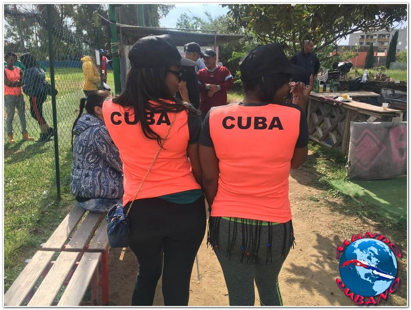
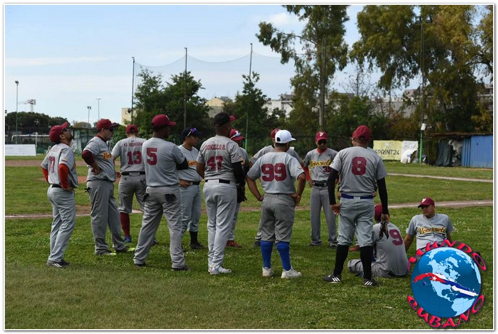
Siamo a due passi da Piazza Vittorio e dalla stazione Termini.Estamos a dos pasos de Piazza Vittorio y de la estación Termini.